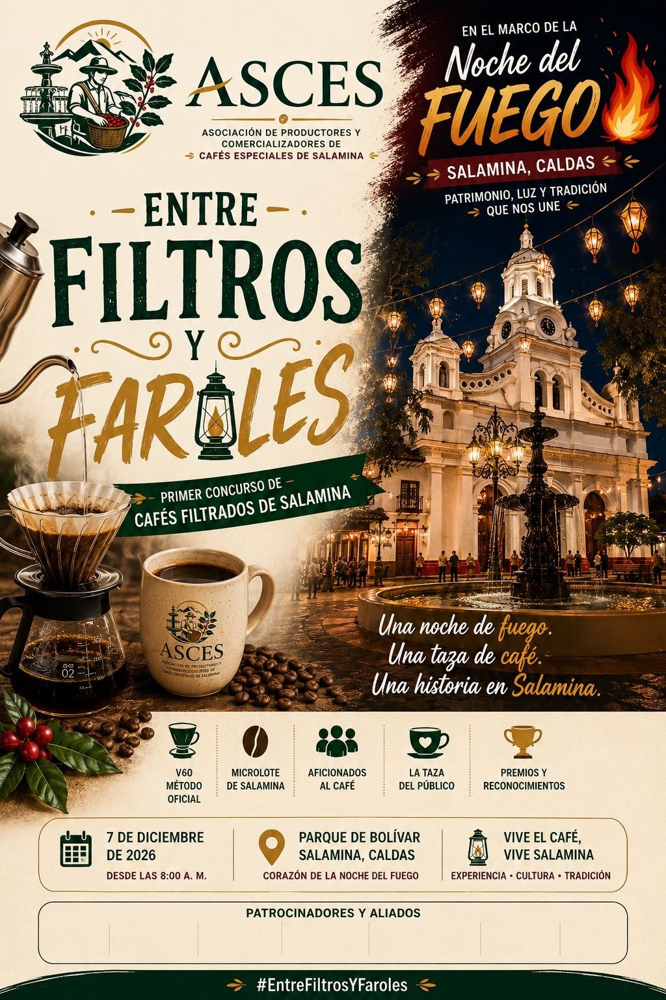
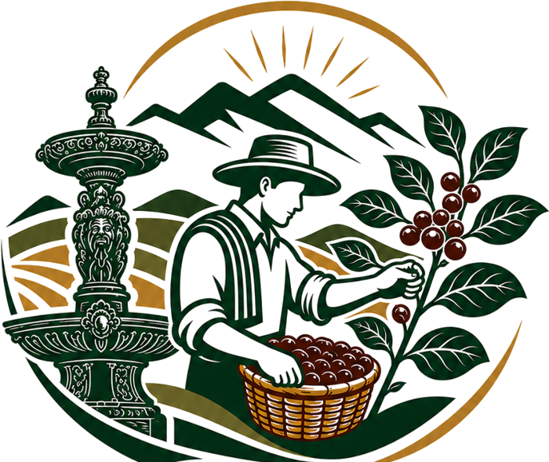

Un pueblo con historia
Salamina conserva la arquitectura de la colonización antioqueña: balcones, portones tallados y calles que hacen parte del Paisaje Cultural Cafetero, declarado patrimonio por la UNESCO en 2011.
ASCES presenta · Primer concurso de cafés filtrados de Salamina
En el marco de la Noche del Fuego
Una noche de fuego. Una taza de café. Una historia en Salamina. Baristas, productores y aficionados preparan café en V60 en pleno Parque de Bolívar, mientras el pueblo patrimonio se ilumina con sus faroles.


ASCES reúne a las familias y marcas que cultivan, procesan y tuestan café de especialidad en Salamina, Caldas. Nos unimos para que el origen Salamina tenga nombre propio y cada marca crezca con el respaldo de las demás.
Cada marca tiene su finca, su altura y su carácter. Conócelas y compra directo a quien cultiva tu café. El orden cambia en cada visita para que todas tengan el mismo lugar.

El detalle perfecto para decir “Pensé en ti”
Conocer la marca →
Café colombiano de proceso natural
Conocer la marca →
Un viaje a la cima del sabor en cada taza
Conocer la marca →
Un café con apellido propio
Conocer la marca →
Café de altura con nombre de árbol nativo
Conocer la marca →
¡Dejando huellas! Excelencia y tradición
Conocer la marca →
Tiempo de calidad con café de especialidad
Conocer la marca →Súmate a ASCES y aparece aquí junto a las demás marcas de especialidad.
Quiero asociarme →Montaña alta, noches frías y familias que llevan generaciones en el cultivo, en uno de los pueblos más bellos del Eje Cafetero.
Salamina conserva la arquitectura de la colonización antioqueña: balcones, portones tallados y calles que hacen parte del Paisaje Cultural Cafetero, declarado patrimonio por la UNESCO en 2011.
Nuestras fincas están entre 1.775 y 1.900 metros sobre el nivel del mar. A esa altura el grano madura despacio y gana dulzor, acidez y complejidad.
Un café es de especialidad cuando supera los 80 puntos en catación. Nuestras marcas trabajan cada lote para llevar ese nivel a tu taza.

El 7 de diciembre, en plena Noche del Fuego, el Parque de Bolívar se llena de V60, microlotes y aficionados. Te contamos cómo participar.
El mismo grano puede saber muy distinto según cómo se procese después de la cosecha. Una guía corta para elegir mejor tu café de Salamina.

El V60 es el método oficial de Entre Filtros y Faroles. Con esta receta sencilla puedes practicar en casa con cualquier marca de la asociación.
Asóciate a ASCES para aparecer en esta web, participar en catas, ferias y eventos, y vender con el respaldo del origen Salamina.
Compra café de varias fincas de Salamina con un solo contacto. Pide muestras para catar antes de comprar.